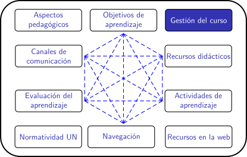
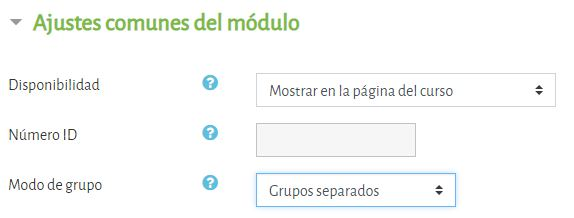

Planificación de clases remotas en la UNAL (periodo 2020-02)
Grupos
¿Para qué crear grupos en Moodle?
Con la opción de grupos, Moodle facilita la organización de los estudiantes de un curso en equipos pequeños. Esta opción es útil para:
- Diseñar actividades que fomenten el trabajo en equipo.
- Asignar monitores que realicen el acompañamiento a los estudiantes en cursos masivos.
Potencial pedagógico
La organización de grupos constituye un escenario propicio para favorecer el aprendizaje colaborativo y la construcción colectiva de conocimiento mediante actividades que requieran la interacción y la comunicación entre los estudiantes, como: resolución colaborativa de problemas, creación de documentos compartidos, desarrollo de proyectos, etc.
Para aprovechar todo su potencial pedagógico, las actividades grupales requieren una estructuración detallada y cuidadosa, acorde con los objetivos de aprendizaje. Algunas cuestiones técnicas a resolver antes de proceder a la creación de grupos en la plataforma son:
- ¿Cuántos estudiantes asignaremos a cada grupo?
- ¿Es preferible organizar los grupos al azar o establecer una norma para su estructuración?
- ¿De qué manera realizaremos el seguimiento al trabajo del grupo?
¿Cómo los creo?
La creación de grupos se realiza en el módulo de administración del curso, como se muestra en el siguiente video tutorial:
¿Cómo se configuran las actividades por grupo?
Los foros de discusión, las tareas y las wikis pueden configurarse para el trabajo por grupos en la sección "Ajustes comunes del módulo" que se despliega al crear o editar la actividad.

La opción "Modo de grupo" puede ser:
- Sin grupos: Cuando no hay grupos y todos los estudiantes participan en la misma actividad.
- Grupos separados: Los estudiantes participan en la actividad de su grupo y no pueden ver el trabajo de los demás grupos.
- Grupos visibles: Los estudiantes trabajan en la actividad de su grupo y además pueden ver el trabajo de los otros grupos.
Reflexión
- ¿Cómo puedo aprovechar el potencial del trabajo en equipo para alcanzar los objetivos de aprendizaje propuestos en mi asignatura? Participe en el foro.
- En sus asignaturas, ¿es posible organizar aprendizaje basado en proyectos , aprendizaje basado en problemas u otra estrategia que involucra el trabajo colaborativo de los estudiantes? Participe en el foro.
- ¿Qué estrategias virtuales para el trabajo colaborativo, se pueden implementar en la actual contingencia, para fortalecer el aprendizaje de los estudiantes? Participe en el foro.
Obra publicada con Licencia Creative Commons Reconocimiento Compartir igual 4.0